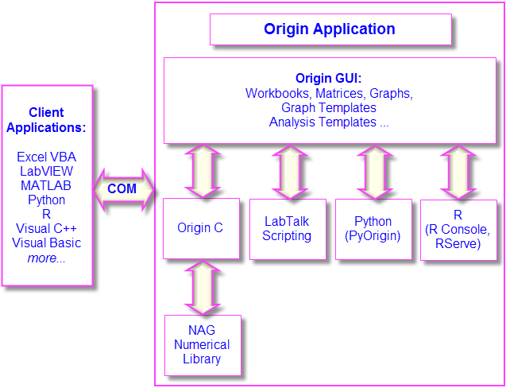

Programmieren in Origin
Programming-in-Origin
- 
Sobald Sie mit Origin vertraut werden und Ihre Verwendung der Software sich ausweitet, möchten Sie vielleicht programmatisch auf bestehende Funktionen in Origin zugreifen oder Ihre eigenen benutzerdefinierten Routinen und Hilfsmittel hinzufügen oder von anderen Anwendungen aus mit Origin kommunizieren. Dieses Kapitel gibt einen Überblick über die Programmieroptionen, die Origin zur Verfügung stellt. Weitere Informationen finden Sie in den folgenden programmierungsrelevanten Quellen:
- Die Dokumentation zur Programmierung umfasst Anleitungen sowie Sprachreferenzen. Darüber hinaus sind Beispiele im Menü Hilfe der Software bereit gestellt.
- Eine Programmierungsdokumentation ist online verfügbar unter www.originlab.com/doc.
- Sie können die Online-Seiten zur Programmierung schnell finden, indem Sie eine Websuche über Ihren Browser durchführen und dabei nach Stichwörtern wie labtalk importing, originc interpolate oder labview origin send data suchen.
- Unter www.originlab.com/forum steht ein Forum zu Fragen der Origin-Programmierung zur Verfügung.
- Sample-Dateien für LabTalk, Python, COM-Server sowie Client etc. befinden sich in dem Ordner \Samples Ihrer Origin-Software.
In Origin programmieren
LabTalk
Programmierung Origin, LabTalk LabTalk Skript
LabTalk ist eine Skriptsprache, die Zugriff auf die meisten Funktionalitäten in Origin gewährt. Mit LabTak ist es möglich, auf Eigenschaften von Origin-Objekten wie Arbeitsblättern, Spalten, Diagrammlayern und Diagrammen zuzugreifen und sie zu ändern. LabTalk-Skript kann sogenannte X-Funktionen einbinden, die eine erweiterte Datenverarbeitung und -analyse durchführen.
Es gibt viele Optionen zum Ausführen von LabTalk-Skripten. Mehrere Skriptzeilen können in einer Datei als Abschnitt strukturiert werden. Diese einzelnen Abschnitte können von der Bedienoberfläche über die Befehlseingabe im Skriptfenster oder Befehlsfenster ausgeführt werden; über Schaltflächen, die zu Arbeitsblättern und Diagrammen hinzugefügt wurden; über vorhandene oder benutzerdefiniert erstellte Symbolleistenschaltflächen; über benutzerdefinierte Menübefehle.
 |
Das folgende "Mini-Tutorial" zeigt, wie Sie ein Schaltflächenobjekt zu einem Arbeitsblatt hinzufügen, wie Sie ein kurzes LabTalk -Skript mit der Schaltfläche verbinden und dann die Schaltfläche dazu verwenden, das Skript auszuführen und eine grundlegende statistische Berechnung durchführen, während die Ergebnisse in das Arbeitsblatt geschrieben werden.
- Führen Sie Origin aus und öffnen Sie ein neues Projekt, indem Sie auf die Schaltfläche Neues Projekt
 auf der Symbolleiste Standard klicken. auf der Symbolleiste Standard klicken.
- Klicken Sie auf Daten: Aus Datei importieren: Einzelnes ASCII und navigieren Sie zur Datei \Samples\Graphing\Box Chart.dat. Wählen Sie die Datei und klicken auf Öffnen. Die Datei wird in das aktive Arbeitsblatt importiert.
- Wählen Sie bei aktivem Arbeitsblattfenster Format: Worksheet. Klicken Sie im Dialog Arbeitsblatteigenschaften auf die Registerkarte Größe und legen Sie den Abstand von oben auf 25. Klicken Sie dann auf OK. In dem Arbeitsblattfenster wird ein Abstand hinzugefügt.
- Klicken Sie auf das Hilfsmittel Text einfügen auf der Symbolleiste Hilfsmittel. Klicken Sie in den Abstand, den Sie hinzugefügt haben, und geben Sie "Beschriftungszeile für Mittelwert hinzufügen" in das Textobjekt ein. Klicken Sie außerhalb des Textobjekts, um den Bearbeitungsmodus zu beenden.
- Klicken Sie mit der rechten Maustaste auf die Textbeschriftung und wählen Sie Eigenschaften. Wählen Sie die Registerkarte Programmierung unter Kriterien für Skriptausführung die Option Mausklick. Kopieren und fügen Sie das folgende Skript in das Textfeld ein:
wks.userParam1 = 1; wks.userParam1$ = "Mean"; for (int ii = 2; ii <= wks.ncols; ii++) { range rr = $(ii); Col($(ii))[D1]$ = $(mean(rr),.2*); }
- Klicken Sie auf OK, um die Einstellungen anzuwenden und den Dialog Textobjekt zu schließen. Beachten Sie, dass Ihr Textobjekt jetzt wie eine Schaltfläche aussieht.
- Klicken Sie auf die Schaltfläche. Beachten Sie, dass eine neue Kopfzeile mit der Beschriftung "Mittelwert" zu dem Arbeitsblatt hinzugefügt wurde und der Mittelwert von jeder Datenspalte in die Zelle über der entsprechenden Spalte geschrieben wird.
|
|
Hinweis: Weitere Informationen zu LabTalk, Origins Skriptsprache, erhalten Sie in Ihrer Produktdokumentation unter Hilfe: Programmierung: LabTalk. Die Sample-Dateien befinden sich im Ordner \Samples\LabTalk Script Examples Ihrer Origin-Software.
|
Python
Programmierung Origin, PythonPyOrigin ModulPython
Origin enthält eine eingebettete Python-Umgebung, so dass Sie die Möglichkeit haben, Python in Origin auszuführen. Origin unterstützt die Ausführung der Befehlszeile des Python-Codes von der Python-Konsole oder von Origins integrierter Entwicklungsumgebung Code Builder aus. Seit Dezember 2022 ist die eingebettete Python-Version 3.11.
|
Hinweis: Weitere Informationen zur integrierten Verwendung von Origin und Python finden Sie in der Python-Dokumentation:
|
 | - Es gibt eine API zum Aufrufen von Origin von Python aus. Siehe Hinweis unten unter Automatisierungsserver.
- Um Konflikte zwischen den Paketversionen zu vermeiden, unterstützt Origin jetzt mehrere PyPackage-Ordner (stellen Sie die Systemvariable @PYP ein).
|
R
Programmieren in Origin, RR Origin unterstützt das Ausführen von R-Befehlen in der Origin-Umgebung. Sie können R-Befehle im Skriptfenster oder über die integrierte R-Konsole ausführen oder Sie können .R-Dateien ausführen. Alle Release von R bis zur Version 3.6 werden unterstützt.
Von Origin aus gibt es zwei Möglichkeiten, eine Verbindung mit R herzustellen:
- R. Installiert auf Ihrem lokalen Computer.
- Rserve. Installiert auf einem Fern-PC.
MATLAB
Die MATLAB-Konsole erlaubt Origin-Anwendern, MATLAB-Befehle von Origin aus auszuführen und Daten zwischen den beiden Anwendungen entweder mit Hilfe einer grafischen Oberfläche oder durch eine Befehlszeile zu übertragen.
- Die Konsole macht es erforderlich, dass sowohl Origin als auch MATLAB auf dem gleichen Rechner installiert sind.
- Origin unterstützt auch das Importieren von MATLAB-Dateien (MAT) von der Festplatte. Es gibt zwei Importroutinen, die ältere Routine mit Daten: Aus Datei importieren und die neue konnektor-basierte mit Daten: Mit Datei verbinden: MATLAB. Für das Importieren von MAT-Dateien muss MATLAB nicht installiert sein.
|
Hinweis: Weitere Informationen zur MATLAB-Konsole finden Sie in der Origin-Hilfe (MATLAB Console. Der Unterordner Origin-Programmordner >\Samples\COM Server and Client\MATLAB enthält ein Beispiel (CreatePlotInOrigin.m, CreatePlotInOrigin.OPJ), das darstellt, wie von einem MATLAB-Client aus eine Verbindung zu einem COM-Server von Origin hergestellt wird (erfordert MATLAB).
|
Origin C
Programmieren in Origin, Origin C NAG Numerical Library Origin C ist eine anspruchsvolle Programmiersprache mit vollem Funktionsumfang, basierend auf der Syntax der ANSI C-Programmiersprache. Origin C unterstützt außerdem eine Anzahl von C++-Funktionen und einige C#-Funktionen. Origin C bietet vollen Zugriff auf alle Funktionalitäten von Origin, einschließlich der Bereiche Datenimport, Datenbearbeitung, grafische Darstellung, Analyse und Export. Sie können mit Hilfe von LabTalk-Skript über die Elemente der Bedienoberfläche wie Schaltflächen, Symbolleisten und Menüelemente auf Origin-C-Funktionen zugreifen.
Origin C-Code ist als eine Zusammenstellung von Funktionen organisiert, die das Weitergeben von Argumenten unterstützt. Origin C-Funktionen werden in Objektcode kompiliert, dann geladen und innerhalb von Origin ausgeführt. Origin C bietet gesteigerte Zuverlässigkeit und Verwaltbarkeit für die Entwicklung und Fehlerbehebung von Code mit größerem Umfang und größerer Komplexität.
Darüber hinaus bietet Origin C auch Zugriff auf die Funktionen der NAG Numerical Library, die in Ihrer Origin-Installation eingeschlossen ist. NAG-Funktionen bieten Ihnen eine große Auswahl von Algorithmen zur Durchführung von Berechnungen, die von einfachen Statistiken und Fourier-Transformationen bis hin zu linearer Algebra und multivariaten Analysen reichen. Origin unterstützt aktuell die NAG-Library-Version Mark 26.1.
|
Hinweis: Weitere Informationen zu Origin C finden Sie in der Origin-C-Dokumentation: Hilfe: Programmierung: Origin C Dort können Sie Informationen zur Verwendung nachlesen. Außerdem stehen Ihnen eine Sprachreferenz, Entwicklernotizen, Beispiele etc. zur Verfügung. Die Beispieldateien befinden sich im Ordner \Samples\Origin C Examples Ihrer Origin-Software.
|
X-Funktion
X-FunktionenProgrammieren in Origin, X-Funktionen Eine X-Funktion ist eine in sich geschlossene XML-Datei, die in Origin als spezieller Typ einer globalen Funktion geladen werden kann. Origin C ist die Sprache, die zum Erstellen von X-Funktionen verwendet wird. X-Funktionen bieten Anwendern eine Möglichkeit, die Funktionalität von Origin zu erweitern, indem benutzerdefinierte Datenverarbeitungsfunktionen hinzugefügt werden. Viele der Standardhilfsmittel in Origin basieren auf X-Funktionen. Sobald eine X-Funktion erstellt wurde, können Sie von jeder Stelle Ihrer Bedienoberfläche aus, die Skriptausführung zulässt, wie z.B. das Skriptfenster, Symbolleistenschaltflächen oder benutzerdefinierte Menüs, auf sie zugreifen.
|
Hinweis: Weitere Informationen zu X-Funktionen finden Sie in Ihrer Produktdokumentation, die mit Ihrer Software zusammen installiert ist: Hilfe: Programmierung: X-Funktionen Dort sind Informationen zur Erstellung und Verwendung von X-Funktionen, eine Sprachreferenz sowie Tutorials zusammengetragen.
|
Automatisierungsserver
Automatisierungsserver, Origin alsVisual Basic/Visual C/C# Excel Origin kann als Automatisierungserver verwendet werden. Client-Applikationen wie National Instruments™ LabVIEW™, Microsoft Excel, Python oder benutzerdefinierte VB/VC/C#-Anwendungen können mit Origin Daten austauschen und auch Befehle senden, die in Origin ausgeführt werden.
|
Hinweis: Weitere Informationen zu Origins Funktionalität als Automatisierungsserver erhalten SIe in der Produktdokumentation, die zusammen mit Ihrer Origin-Software installiert ist: Hilfe: Programmierung: Automatisierungsserver Es stehen Beispiele und eine Sprachreferenz zur Verfügung. Die Beispieldateien befinden sich im Ordner \Samples\COM Server and Client Ihrer Origin-Software.
|
LabVIEW
National Instruments™ LabVIEW™ ist eine gängige Anwendung zum Sammeln von Daten. Viele Hersteller von Instrumenten und Sensoren bieten beispielsweise LabVIEWLabVIEW™-Treiber, um an Daten zu gelangen. Sobald die Daten erfasst sind, muss der Endanwender die Daten grafisch darstellen und analysieren sowie Berichte zur Präsentation erzeugen. Origin bietet eine leistungsstarke Datenanalyse und Hilfsmittel für die grafische Darstellung, einschließlich die Option, Analysevorlagen zu erstellen, um neu erfasste Daten anhand der Einstellungen einer wiederholten Analyse zu analysieren. Die Möglichkeit der Kommunikation zwischen LabVIEW und Origin kann daher die Effizienz der Analyse und Präsentation nach der Datenerfassung enorm verbessern.
Origin wird mit einer Reihe von LabVIEW Sub-VIs ausgeliefert. LabVIEW-Anwender können diese benutzerdefinierten Sub-VIs einfach in ihrer Hauptapplikation von LabVIEW integrieren, um nahtlos mit Origin zu kommunizieren.
|
Hinweis: Weitere Informationen zur Konnektivität von Origin und LabVIEW finden Sie in der Produktdokumentation, die mit Ihrer Origin-Software installiert ist: Hilfe: LabVIEW VI Es werden Beispiele und Tutorials bereit gestellt.
|
Orglab
Orglab ist eine frei verteilte Komponenten-DLL zum direkten Erstellen oder Lesen von Origin-Projekten (.opj) und anderen Origin-Dateitypen (.ogg, .ogw und .ogm). Sie ist als kostenfreier Download verfügbar. Es wird keine Origin-Lizenz benötigt, um Orglab zu verwenden. Normalerweise wird Orglab von Instrumentenherstellern und anderen Drittanbietern eingesetzt, um es ihrer Frontend-Software zu gestatten, Daten als Origin-Dateien auszugeben.
|
Das Orglab-Modul ist für 64-Bit-Systeme verfügbar. Weitere Informationen zu Orglab und die Möglichkeit, das Orglab-Modul herunterzuladen, stehen Ihnen unter Produkte > Orglab auf der Webseite www.originlab.com zur Verfügung.
|